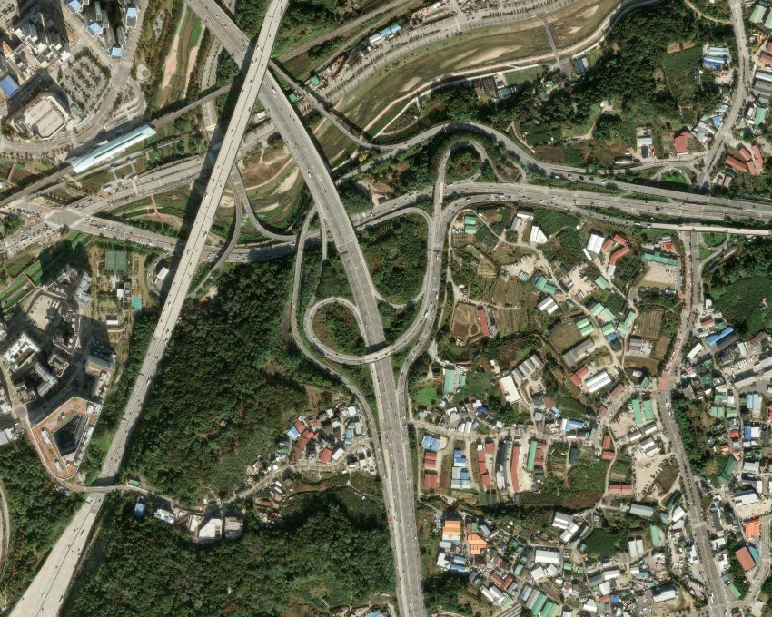

1팀 퇴계일황
성지용 · 김영훈 · 문시원 · 박민호 · 이재중
퇴계원 IC 자율주행 실험
퇴계원 IC 전체 도로
왜 퇴계원 IC인가
진입 램프와 다음 출구가 가깝습니다. 본선으로 들어가는 차는 안쪽 차로를 노리고, 출구로 가는 차는 바깥 차로를 노립니다. 합류할 틈을 찾는 동안에도 다음 분기에 쓸 차로를 준비해야 합니다.
13번과 14번은 북쪽 본선에서 함께 출발합니다. 마지막 분기에서 13번은 0·1차로, 14번은 2차로로 가야 합니다. 같은 위치에서 옆 차와의 간격까지 같아도 목적지가 바뀌면 올바른 행동이 달라집니다.

어떤 주행을 다시 가르칠 것인가
전문가의 성공 주행 160회를 보고 배운 차는, 차로를 바꿀 기회를 한 번 놓치면 시범에서 드물었던 상황에 놓였습니다. 그래서 차를 직접 달리게 하고 그 순간 전문가가 취할 행동을 다시 가르쳤습니다.
같은 출발점에서 두 방법을 비교했다
행동 복제(BC)로 만든 한 모델에서 두 실험을 각각 시작했습니다. 직접 달린 양은 둘 다 5라운드, 720회로 맞췄습니다.
- 기본 DAgger
- 16개 경로를 고르게 달리며, 차가 실제로 본 장면에 전문가의 행동을 붙였습니다.
- 보강형 DAgger
- 실패가 잦은 네 경로를 더 달렸습니다. 실패 직전 3초와 드문 차로변경 장면을 더 자주 학습했습니다.
같은 조건 128회의 완주율
| 모델 | 완주율 |
|---|---|
| BC | 83.6% |
| 기본 DAgger | 92.2% |
| 보강형 DAgger | 97.7% |
최종 선정 · 보강형 DAgger기본형보다 7회 더 완주했습니다. 충돌은 6회에서 2회로, 경로 이탈은 3회에서 1회로 줄었습니다.
128회 주행의 전체 결과
| 모델 | 완주 | 충돌 | 이탈 | 한 차로의 끝에서 멈춘 뒤 30초 동안 움직이지 않거나, 제한 시간 안에 목적지에 도착하지 못한 경우입니다. |
|---|---|---|---|---|
| BC | 83.6% | 13.3% | 3.1% | 0.0% |
| 기본 DAgger | 92.2% | 4.7% | 2.3% | 0.8% |
| 보강형 DAgger | 97.7% | 1.6% | 0.8% | 0.0% |
선정한 모델은 다른 교통에서도 완주할까?
BC로 학습한 모델에 취약 경로를 보강하는 DAgger를 적용한 뒤 가중치를 고정했습니다. 시간당 15,000대 수요에서 16개 경로를 각각 16회씩 달렸습니다. 두 검증의 교통 시드는 모두 학습과 모델 선정에서 제외했습니다. 추가 검증에서는 팀이 이전 평가에서도 쓰지 않았던 시드를 사용했습니다.
평가 목표 완주율 95% 이상 · 충돌률 5% 미만
차량이 보는 것과
행동에 주는 점수
0.2초마다 도로 단위 경로 안내와 주변 차량의 움직임을 읽고, 가감속과 왼쪽·유지·오른쪽 중 한 가지 차로 명령을 함께 냅니다.
관측 · 경로 안내와 교통 상황을 어떻게 구별했나
- 속도와 차로 위치
- 자차 속도·해당 차로의 제한속도(m/s), 현재 차로 번호와 전체 차로 수를 함께 봅니다. 같은 속도라도 본선에서 램프로 들어가면 감속할 여지가 달라집니다.
- 주변 5개 차로 · 120m
- 내 차로와 좌우 두 차로에서 가장 가까운 앞뒤 차량의 간격(m), 상대속도(m/s), 전방 밀도를 읽습니다. 간격이 같아도 옆 차로 뒤차가 빠르게 접근하면 끼어들 틈은 줄어듭니다. 120m는 시속 100km에서 약 4.3초 동안 이동하는 거리입니다.
- 옆 차의 겹침과 시야 가림
- 좌우 바로 옆에 차체가 겹치는지도 표시합니다. 트럭·버스에 가려진 차량은 센서에서 제외하고 거리가 멀수록 측정 오차를 키워, 가려진 공간을 모델이 훤히 볼 수 있는 상황을 줄였습니다.
- 차로가 이어지는 곳
- 차로별로 앞쪽이 얼마나 이어지는지, 분기에서 어느 갈래로 연결되는지 표시합니다. 실선·교차로 내부 여부와 현재 도로 끝까지의 거리도 함께 줘서 차로를 바꿀 수 있는 구간을 판단하게 했습니다.
- 분기 방향 · 400m
- 지도는 최대 400m 앞의 목적 도로 방향과 분기까지의 거리를 알려줍니다. 7개 분기를 점검해 회전 각도와 두 갈래의 좌우 배치가 어긋난 3곳의 표기를 고쳤습니다. 목적지가 같으면 출발 차로가 달라도 안내는 같고, 차로 선택은 정책이 합니다.
강화학습 보상 · 전진, 완주, 충돌에 다른 값을 준 이유
서로 다른 보상 조합을 시험한 뒤 다음 비교에 사용한 설정입니다. 점수는 한 번의 주행 안에서 누적됩니다.
- 지정 경로 완주 +5
- 마지막 도로까지 지정한 순서로 도착했을 때 지급합니다. 전진 보상의 총량(+3)보다 크게 두어 중간까지 달린 주행과 완주를 구별합니다.
- 경로 전진 누적 최대 +3
- 목적지에 가까워지는 동안 중간 신호를 줍니다. 전진 보상을 없앤 단기 비교에서는 192회 중 일반 시간초과가 63건 늘었습니다. 반대로 도착 보너스를 없애고 전진만 크게 주면 충돌을 피하고 차로 끝에 멈추는 사례가 늘어, 두 항을 함께 둡니다.
- 올바른 분기 통과 +1
- 요구된 다음 도로에 실제로 진입하면 분기당 한 번 지급합니다. 기존 +0.25보다 중간 경로 선택에 무게를 두되, 옆 차로를 왕복하는 것만으로는 점수가 쌓이지 않게 했습니다.
- 충돌 −9
- −15에서 −5로 완화한 60만 스텝 비교에서는 같은 192회에서 완주가 51건 늘고 충돌도 21건 늘었습니다. 이 사이의 값을 택하고, 실제 충돌을 시간초과(−8)보다 무겁게 뒀습니다.
- 시간초과 −8
- 진행할 수 없는 차로 끝에서 앞이 빈 채 30초간 멈추거나, 1,000스텝(200초) 안에 도착하지 못하면 종료합니다. 끝에서 기다리는 행동의 비용을 기존 −5보다 키우고 결과표에서는 두 경우를 시간초과로 합산합니다.
- 앞이 빈 정지 −0.03/스텝
- 속도 0.5m/s 미만이고 앞차가 없거나 25m보다 멀 때 적용합니다. 정체로 앞차를 기다리는 상황을 구분하면서, 긴 정지는 종료 전부터 비용이 쌓이게 합니다.
- 전방 추돌 위험 · 별도 비교
- 앞차에 0.5m/s보다 빠르게 접근하고 현재 속도차로 간격이 닫히기까지 2.5초 미만이면 위험도의 변화를 반영합니다. 같은 기본 보상에 이 항만 켜고 끄면서 충돌과 차로변경이 어떻게 달라지는지 비교합니다.
충돌이 줄었는데
왜 완주도 줄었을까?
초기 고교통 실험에서 BC와 DAgger를 거친 모델에 PPO를 추가하자, 64회 중 충돌은 18회에서 4회로 줄었습니다. 같은 주행에서 시간초과는 0회에서 51회로 늘고 완주는 46회에서 9회로 줄었습니다.
후속 보상 실험에서는 충돌을 피한 차가 실제로 목적지에 도착했는지, 어느 차로에서 멈췄는지 함께 기록했습니다.
| 시작 정책 | PPO 전 완주 | PPO 후 완주 | 충돌 건수 전 → 후 |
|---|---|---|---|
| 무작위 초기화 | 11/64 · 17.2% | 18/64 · 28.1% | 26 → 7 |
| BC | 25/64 · 39.1% | 24/64 · 37.5% | 39 → 7 |
| DAgger | 37/64 · 57.8% | 2/64 · 3.1% | 13 → 15 |
| BC + DAgger | 46/64 · 71.9% | 9/64 · 14.1% | 18 → 4 |
다른 학습 조건의 완주율과 충돌률
모델마다 주행 횟수와 학습량이 다릅니다. 각 비율 옆에 실제 횟수를 표시했습니다.
| 조건 | 완주 | 충돌 |
|---|---|---|
| BC + DAgger모방학습 · DAgger · 고교통 64회 | 53/64 (82.8%) | 11/64 (17.2%) |
| BC + DAgger → PPO16,384스텝 추가 학습 · 독립 교통 시드 64회 | 47/64 (73.4%) | 14/64 (21.9%) |
| DAgger 단독모방학습 · 고교통 64회 | 40/64 (62.5%) | 9/64 (14.1%) |
| 순수 PPO · 위험 보상 포함60만 스텝 · 3개 학습 시드 192회 | 82/192 (42.7%) | 16/192 (8.3%) |
| BC 단독행동 복제 · 고교통 64회 | 23/64 (35.9%) | 41/64 (64.1%) |
| 순수 PPO · 기본 보상30만 스텝 · 고교통 64회 | 16/64 (25.0%) | 2/64 (3.1%) |
실험 일지
도로 구현부터 최종 검증까지의 날짜별 기록
- 10.27 – 11.09
퇴계원 IC 도로 구현
- OpenStreetMap을 바탕으로 퇴계원 IC와 인접한 산노 IC를 SUMO 도로망으로 구성했습니다.
- 램프·고가 차로 형상과 합류 접선을 다듬고, 서쪽 엇갈림 출구를 추가했습니다.
- 11.12 – 11.13
교통 시나리오 검증
- 자율주행차 없이 일반 차량만으로 먼저 돌려 병목·교착 지점을 확인했습니다.
- 진입부 전체에 시간당 15,000대의 수요를 설정하고, 합류·진출·본선 유지가 포함된 16개 경로에서 검증했습니다.
- 11.14 – 11.16
관측·데이터 정의
- 같은 분기에서 서로 다른 목적지를 구별하도록 도로 단위 안내를 추가하고, 대형 차량에 가려진 주변 차량은 관측에서 제외했습니다.
- 분기 7곳을 지도와 대조해, 도로가 휘는 방향과 출구의 실제 좌우 순서가 달랐던 3곳의 안내를 수정했습니다.
- 11.19 – 11.24
모방학습 (BC · DAgger)
- 규칙 기반 전문가 주행으로 데이터를 모으고 행동 복제(BC)로 첫 정책을 학습했습니다.
- 학생 차량이 차로 끝에 남거나 옆 차량과 엇갈린 장면을 다시 수집해 전문가의 행동으로 보완했습니다.
- 11.24 – 11.25
PPO 보상 실험
- 완주·충돌·전진·분기 보상 비율을 바꿔 가며 최대 60만 스텝까지 학습했습니다.
- 같은 출발·교통 조건의 주행을 짝지어 비교해 어떤 보상이 어떤 결과를 바꿨는지 추적했습니다.
- 11.26
발표 모델 선정
- 같은 경로·출발 차로·배경 교통에서 모델을 교체해 완주와 충돌을 비교했습니다.
- 고교통 256회씩 두 차례 검증한 보강형 DAgger R5를 발표 모델로 확정했습니다.
코드와 발표 자료
주행 데이터 · 한 번의 판단을 어떻게 기록하나
한 행에는 주행 번호, 시점, 정책이 본 관측, 가감속·차로 명령, 실제 차로변경 여부, 보상, 다음 관측과 종료 사유가 들어갑니다. 같은 시점의 전체 차량 좌표(m)·속도(m/s)·차로를 별도로 저장해 시야에 가린 차가 있었는지도 재생할 수 있습니다. 완주를 집계할 때는 지정한 도로의 순서와 도착을 확인하고, 차량이 강제로 이동한 경우는 제외합니다.
전체 기록은 압축 JSONL, 학습용 배열은 NPZ로 저장합니다. 수집 목표는 1,000만 스텝입니다. 데이터 항목과 단위
팀 기여 · 도로부터 정책 평가까지
도로망과 일반 차량의 엇갈림은 도로 구현 기록, 관측과 시야 가림은 주변 차량 관측과 시야 가림 실험에 담았습니다. 전문가 데이터를 보강한 과정은 모방학습 기록, 같은 교통에서 보상을 비교한 과정은 강화학습 기록에서 볼 수 있습니다.
영상 속 비교 모델의 검증 기록
상단 영상은 PMH의 BC + DAgger 모델이 13번 경로를 주행한 장면입니다. 기존 경로 제약에서 245/256회 완주한 가중치를 같은 출발 조건으로 재평가했습니다. 실제 오진입을 반영한 결과는 완주 231회(90.2%), 충돌 1회, 경로 이탈 24회였습니다.
- 발표 메인 모델
- 보강형 DAgger 선정 근거
- 실행 코드
- 영상 속 모델과 코드 강화학습 비교 실험
- 수업 자료
- 프로젝트 평가 기준 주행 정책 Q&A
- 발표 슬라이드
- 팀 발표자료
- 최종 발표 PDF
- Hugging Face 데이터셋